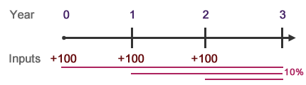

How much is an annuity worth at the end of three years if it pays $100 at the beginning of each year assuming 10% interest?
How would the problem we previously solved change if payments were made at the beginning of each term (i.e., an annuity due rather than an ordinary annuity)? Looking at the timeline, you can see that each payment earns an extra year of interest.
We've already calculated that the ordinary annuity's FV is $331.00. Now we'll use the basic TVM equation to add one more year of interest.
\(FV=PV(1 + i)^n\)
Annuity Due
To solve:
- First, find the FVA (just as you would for an ordinary annuity). We already know its $331.00, and we'll use this as the PV in year 2.
- Then bring the FVA forward another year to reflect the extra period of interest using the TVM equation and solving for FV in year 3.
\(FV=331(1+.10)^1\) ⟶ \(FV=\$364.10\)